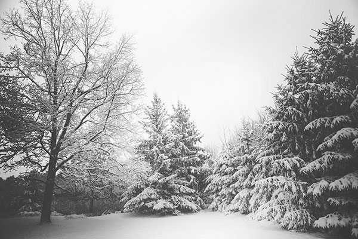

Winter Storm to Batter the Northeast With Heavy Snow
Winter Storm Quinn will hammer the storm-weary Northeast with heavy snow and strong winds, triggering additional power outages and tree damage just days after another nor'easter knocked out power to over 2 million.
Snow from Quinn has already begun to spread into the interior Northeast, but the lion's share of the storm will occur Wednesday into Thursday. Big, wet snowflakes were observed in the Binghamton, New York, area Tuesday evening as the first round of moisture arrived in the Northeast.The evolution of the upper-level weather pattern will determine what impacts this next system will have in the East.
This disturbance will slide east this weekend through the Plains and Midwest and an area of low pressure is expected to develop as it tracks across the South. Once again, an area of low pressure could then strengthen near or off the East Coast early next week.